ma:delm a'a:marks'' 是上次跳转操作光标所在的位置'" 是上次退出当前文件的位置'[ 是上次编辑（删除修改等）的开始位置'] 是上次编辑（删除修改等）的结束位置a-z 可以标记本文件内部的位置坐标A-Z 可以跨文件标记位置坐标0-9 在配置文件 ~/.viminfo 中，可以保留标记#首先用无模式让vi编辑一下/etc/passwd
vi -u NONE /etc/passwd
:f[ile]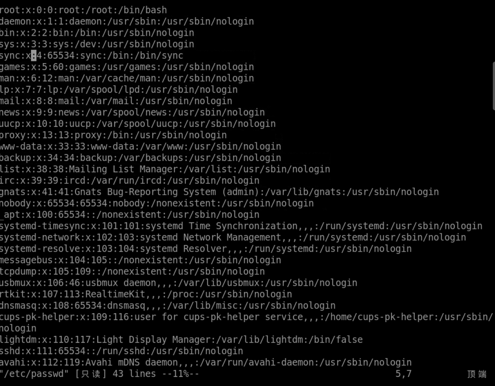
标尺 是一个开关option标尺 开关的名称是 ruler 尺子📏ruler 标签可以用 :set 这样的方式进行设置:se[t] ru[ler] 就可以设置标尺可见:se[t] noru[ler] 就可以设置标尺不可见number 标签也可以用 :set 这样的方式进行设置:se[t] nu[mber] 就可以设置行号:se[t] nonu[mber] 就可以设置行号不可见:se nu ru:se noru nonu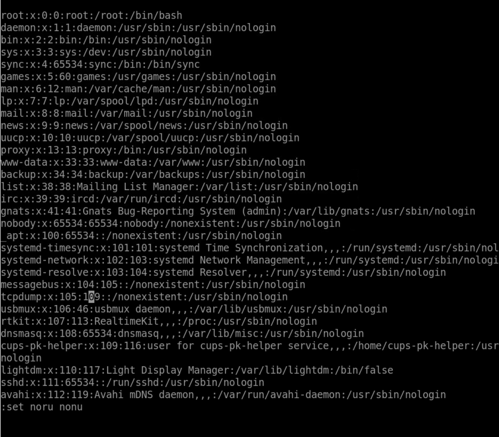
options但是决定着目前显示的状态
可以使用 :options
options.txt 查看 所有 的开关/ruler 在当前文件中查找 ruler 这个开关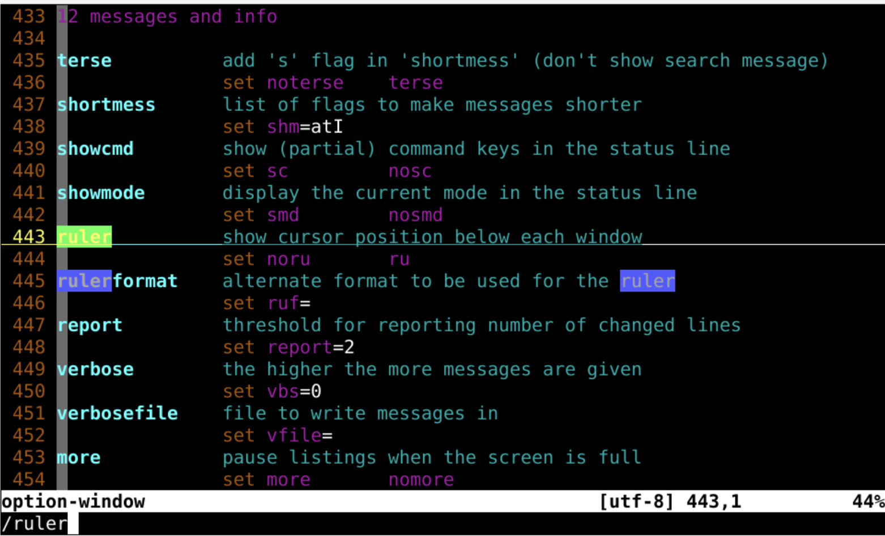
ruler 开关当前状态?:set number?:set ruler?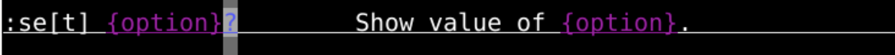
:set number&:set ruler&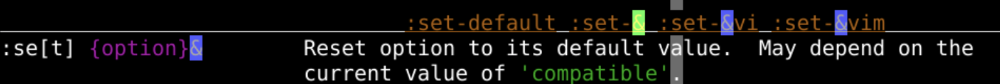
:options 可以得到一行的简单解释:h 'ruler' 找到这个选项开关的细节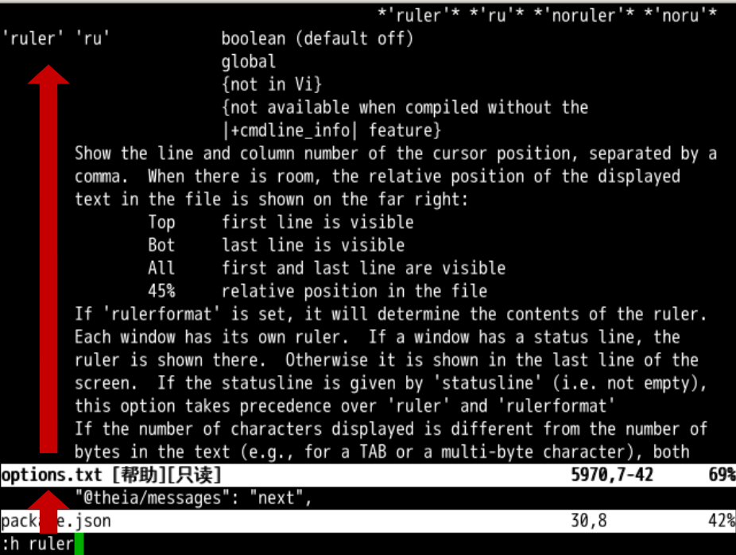
80*24 屏幕 📟 中明确标注行号 和 列号行号 的显示开关是 :se nu列号 就是当前光标所在列的序号:33 快速跳转第33行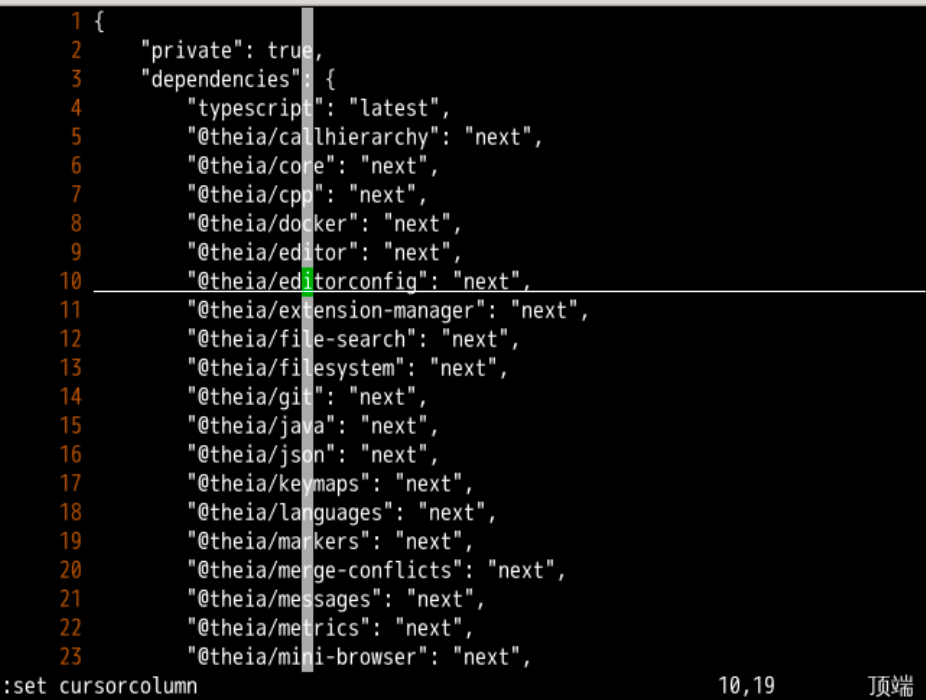
顶端，文件第 1 行在屏幕顶端底端，文件最后 1 行在屏幕底端全部，文件很短一屏幕就全显示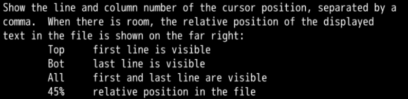
:set showcmd 可以在标尺左边看见所用的命令show 显示cmd 命令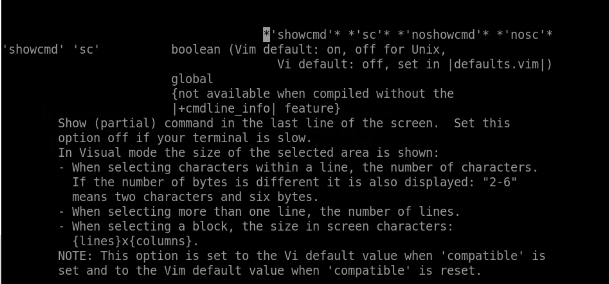
29% 的位置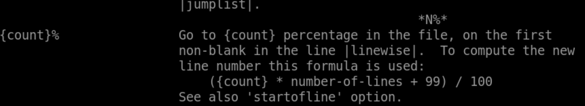
:set history=100:h 'history'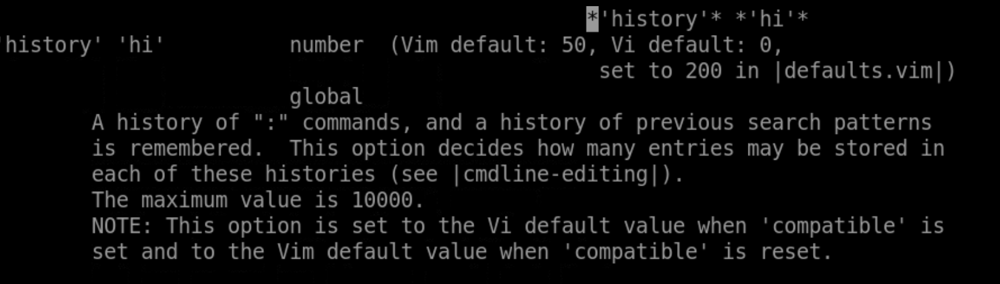
:se ru:se noru:se nu:se nonu:se showcmd:se noshowcmd